Cabra Montés
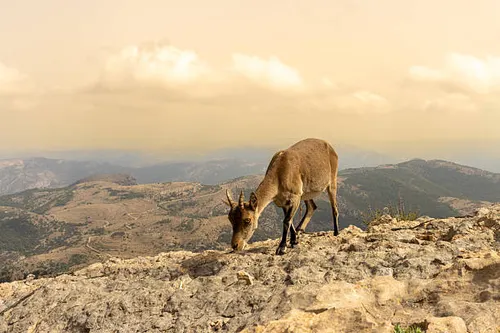
Catálogo detallado de la vida silvestre en los ecosistemas malagueños
Desde grandes rapaces hasta pequeños reptiles endémicos.

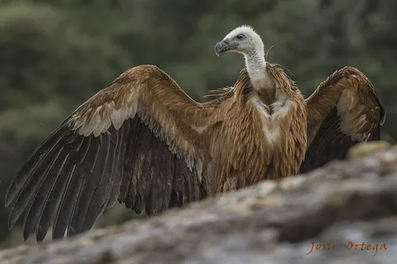
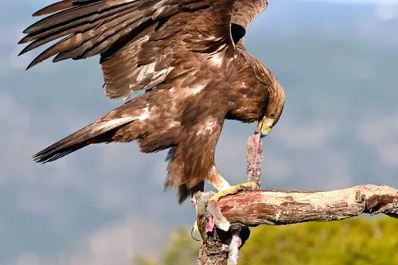
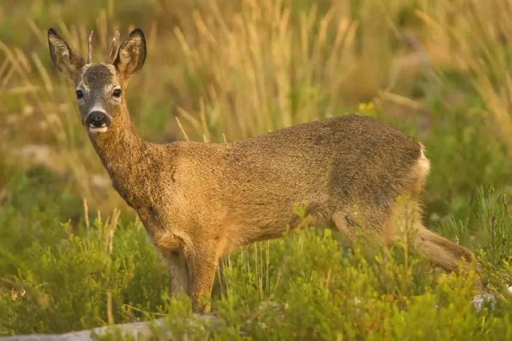
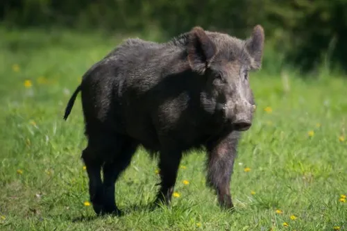
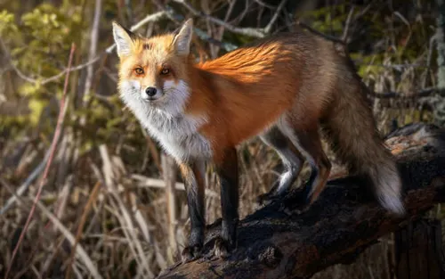
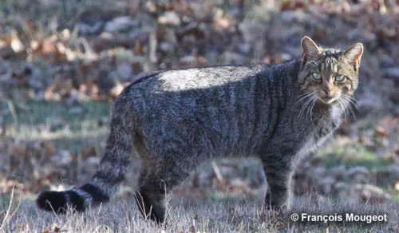
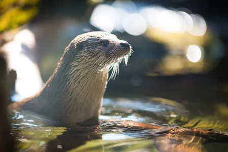
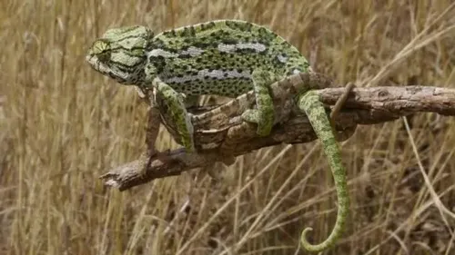
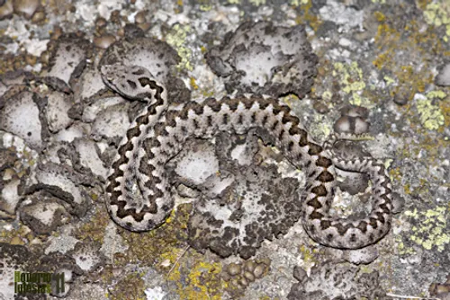
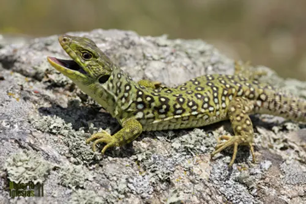
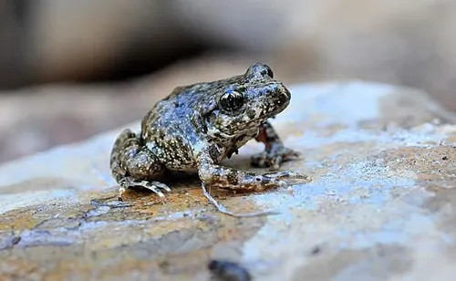
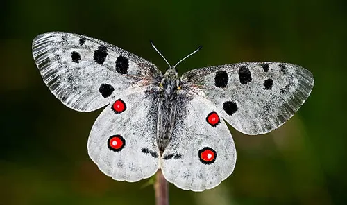
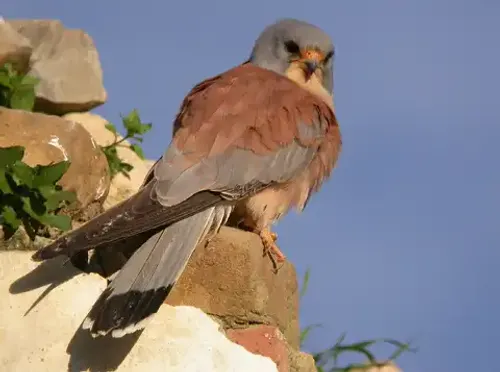
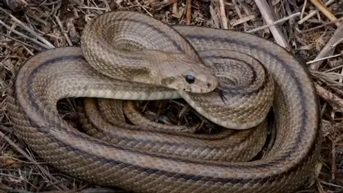
Especies adaptadas al clima mediterráneo de montaña.
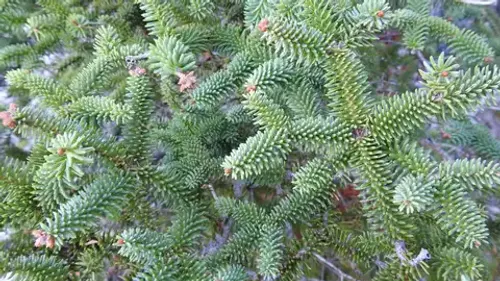
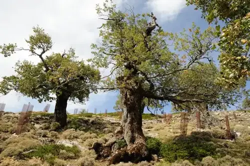
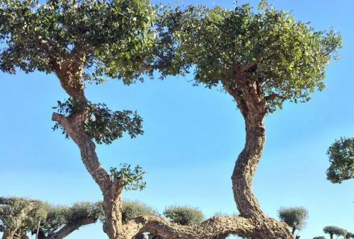
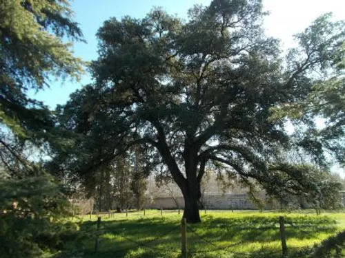
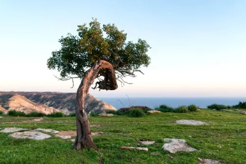
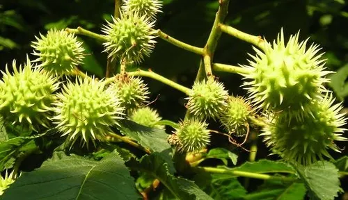
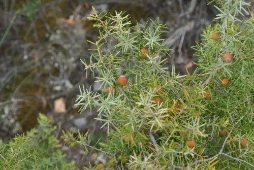
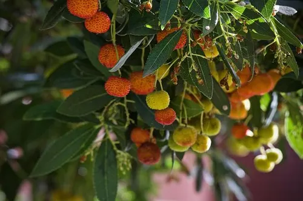
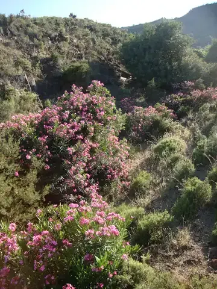
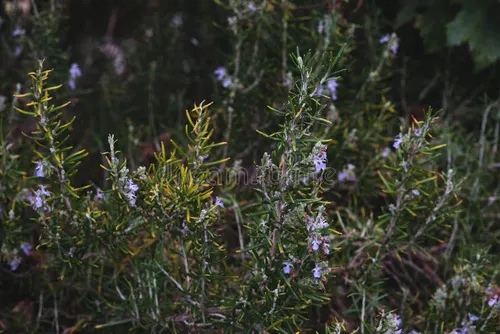
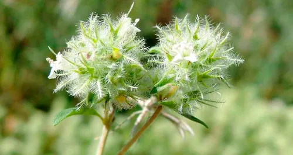
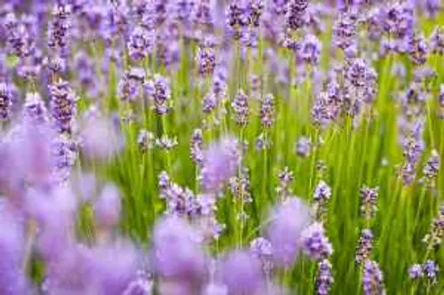
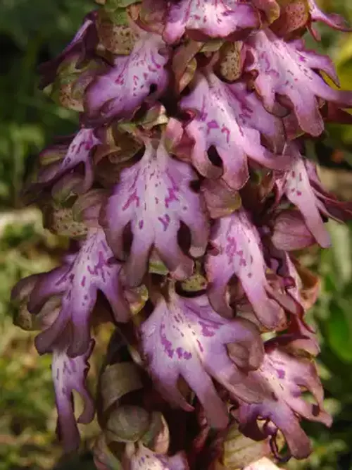
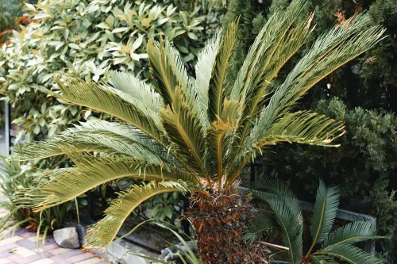
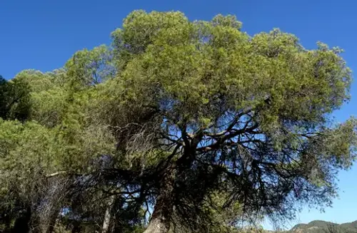
Muchas de estas especies, como el Pinsapo o el Sapo Partero Bético, son exclusivas de esta zona del mundo. Como técnicos de ASIR, entendemos la importancia de los sistemas cerrados y delicados; la naturaleza funciona bajo un equilibrio similar.
Gran parte de la fauna aquí listada vive protegida bajo normativas Europeas que garantizan su supervivencia frente al desarrollo urbano.